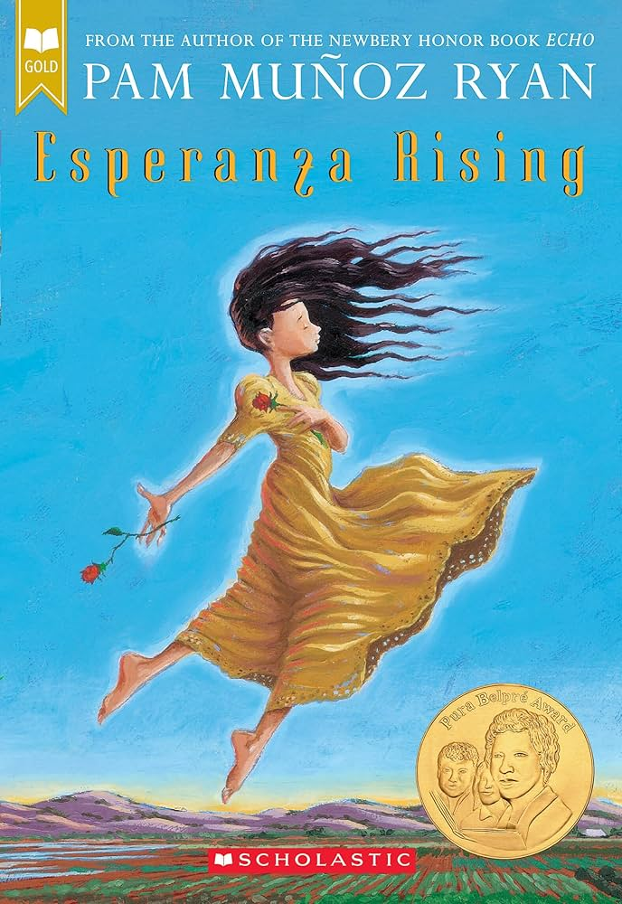
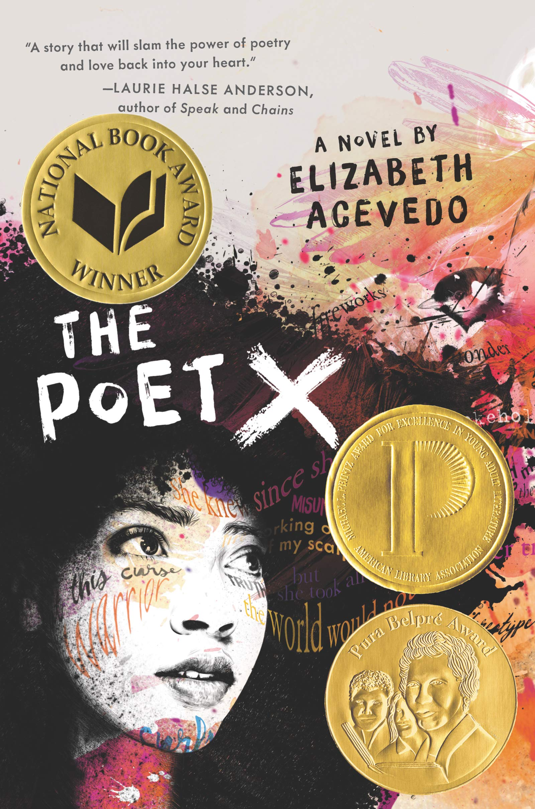
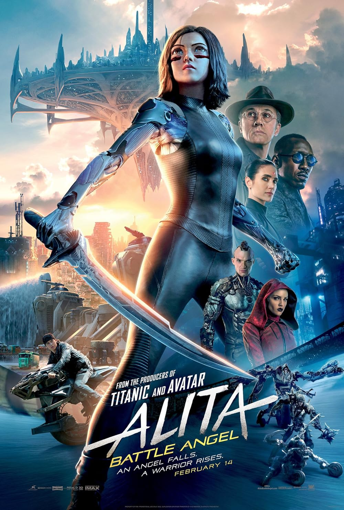

On this page I am going to talk about my favorite books.
Esperanza Rising There's a girl named Esperanza, which means hope. She lives in mexico, she is rich, and her family owns a vineyard. Her dad got killed by bandits, and Esperanza, her grandma, and her mom were forced to leave her house and country or else she would get killed too. They fled to America to escape from the bandits and any gangs that were trying to hurt them. But them going to America, they had to restart their life over and work in the fields, to start earning money to live. They were all getting sick from working in the fields too much, there was a lot of dust getting into their lungs.
Poet-X A girl named Xiomara who has a hard time seeing herself.
Wall-E Humans are destroying the earth quickly with all the trash they kept making and throwing out. But they created these robots called Wall-E
Alita A city is divided into the rich and the poor, the rich live on a separate land above the poor. Whatever the rich doesn't want anymore, they throw away, and it ends up in the poors land, where the junkyard is. There is a doctor who lives in the poor place, he is exploring through the junkyard looking for parts of cyborgs or any equipment he thinks he can use for his clinic, when he found a cyborg head, with it's brain still intact and functioning. So he took the head to try to revive it. The doctor already had a cyborg body, which was meant for his daughter who was paralyzed, but she unfortunatly died. So the doctor used the body for the cyborg head, which worked and now the cyborg is alive. When she woke up, she didnt know what was happening, but she saw clothes, put them on. Then saw a mirror, and decided to look into it, and she sees herself for the first time. Since she already had a brain, that means she was already alive, but she doesn't remember anything about her past life.